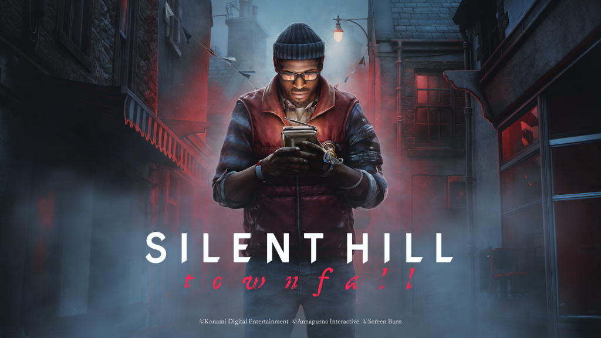
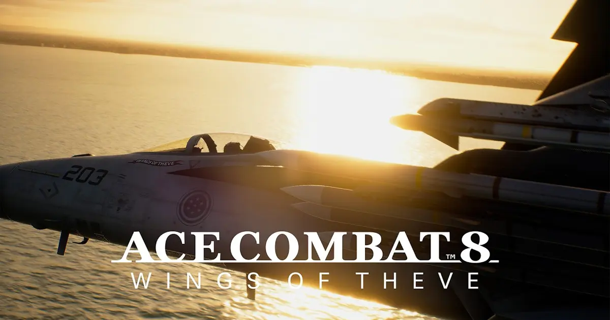

Wolverine, Silent Hill y Ace Combat: qué dijo la crítica en septiembre
Un estreno de Sony que se quedó corto, el mejor Silent Hill en 25 años según parte de la prensa y un Ace Combat que superó lo que se esperaba de él.

Marvel's Wolverine: correcto, y para Insomniac eso es poco
Salió el 15 de septiembre. La nota más baja de un juego de Marvel hecho por Insomniac.
El juego de Logan era uno de los grandes estrenos del año para PlayStation, pero se quedó en 77 puntos sobre más de cien reseñas. Son trece puntos menos que Marvel's Spider-Man 2. Varios medios grandes, como IGN, GameSpot, Eurogamer, VGC y GamesRadar+, le pusieron un 6, y Giant Bomb un 5. Las notas más altas vinieron sobre todo de medios internacionales más pequeños.
La crítica coincide en lo bueno: el combate y la interpretación de Liam McIntyre como Logan. Las quejas apuntan a una estructura lineal que algunos vieron como "una reliquia de principios de los 2000", a la poca variedad de enemigos y a una historia que no aprovecha todo su planteamiento. Kotaku lo resumió como un "bien" a secas, ni entusiasmo ni rechazo.
Lo que gustó
- Combate brutal y fluido
- Liam McIntyre como Logan
Lo que no
- Estructura lineal y anticuada
- Poca variedad de enemigos
- Historia que no aprovecha su premisa
Silent Hill: Townfall: miedo lento
Salió el 24 de septiembre. El 89% de la crítica lo recomienda en OpenCritic.
Lo desarrolla Screen Burn, el estudio escocés antes llamado No Code, y lo publican Konami y Annapurna Interactive. Townfall deja el pueblo de Silent Hill y lleva la saga a primera persona. La historia transcurre en 1996, en St. Amelia, un pueblo ficticio en una isla de Escocia. Simon Ordell despierta allí y, con un televisor CRT portátil que detecta enemigos a través de las paredes, va descubriendo una culpa colectiva ligada al desastre de una plataforma petrolera en el que murieron 95 trabajadores.
GamesRadar+ lo llamó "implacablemente oscuro y perturbador" y algunos medios dicen que es lo mejor de la saga en 25 años. La crítica más repetida es el sigilo. El juego se parece mucho a Alien: Isolation, con su radar de baja fidelidad y sus armarios para esconderse, pero no consigue esa misma tensión del gato y el ratón. Además, castiga con dureza que te descubran.

Lo que gustó
- Atmósfera y dirección de arte
- Historia sobre la culpa, con cinco finales
- El CRT como mecánica y no como interfaz
Lo que no
- Sigilo frustrante y punitivo
- Ritmo muy lento
Ace Combat 8: la sorpresa del mes
Sale el 2 de octubre. La entrega mejor valorada de la saga en 25 años.
Wings of Theve mantiene el combate aéreo arcade de siempre y lo pule hasta el punto de que varios críticos dicen que es el Ace Combat que mejor se siente al mando. La campaña sigue al escuadrón Joker e incluye secuencias interactivas en primera persona. Su tono melodramático y sincero ha dividido a la crítica: a unos les parece entrañable y a otros, excesivo. Las quejas concretas son Rex, un compañero que comenta todo lo que pasa por radio, y un ritmo irregular entre las grandes batallas y las misiones de reconocimiento.

En septiembre, el juego con más presupuesto fue el que más decepcionó, y una saga de nicho se llevó los mejores elogios.
Mi lectura
[Escribe aquí tu opinión: si jugaste alguno de los tres, qué te pareció y si coincides con la crítica. Si te interesa lo técnico, puedes hablar de cómo el CRT de Townfall obliga a usar la primera persona, que es un buen tema para un análisis visual.]